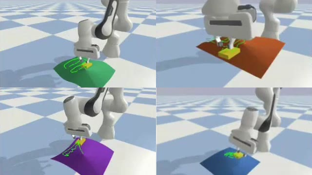
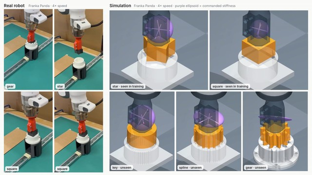
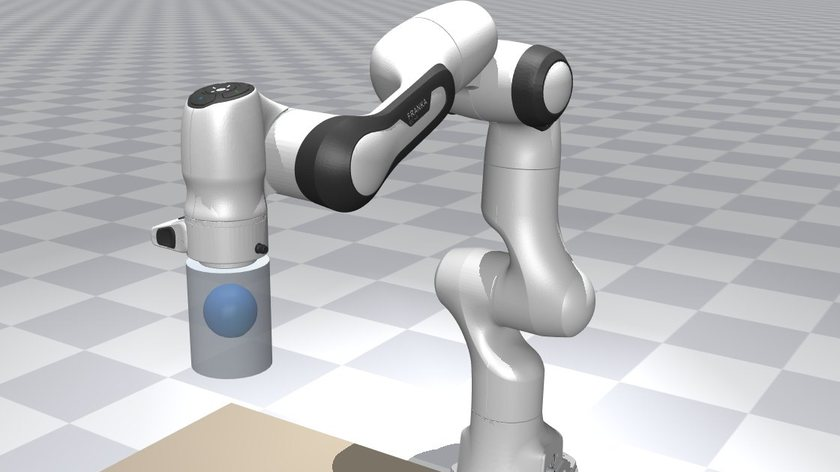

Papers
Robots that learn motion and stiffness for contact, and keep learning safely.

Safe Variable Impedance Reinforcement Learning on the Constraint Manifold First author, with Jing Xiao A robot that learns its own stiffness with reinforcement learning can press too hard just by stiffening. A safety filter that watches stiffness as well as motion catches this, with 8.6× fewer force-limit violations than the best baseline. Read more →
Learning Contact-Rich Skills from a Few Demonstrations Paper in preparation · first author, with Jing Xiao Show a robot a few times, and let it practice the rest: a few human demonstrations become verified practice in simulation that teaches it how to move and how firmly to hold. Read more →
Self-Confirming Selection: Why Modular Robot Memories Fail to Recall Paper in preparation A robot with one skill per situation can keep using the wrong one after things change, like a robot dog that keeps limping after its leg has healed. Why it happens, how to predict it, and a fix. Read more →